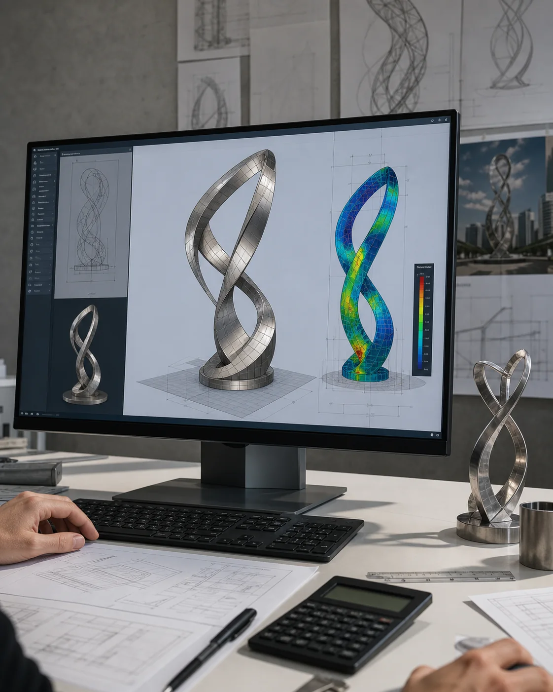

What should I send before requesting a quote?
Send site photos, plan dimensions, desired scale, material direction, destination country, deadline, and any installation constraints.
The commission page is for clients with a real site, material question, scale requirement, or delivery constraint. A useful first reply depends on drawings, dimensions, exposure, destination country, and schedule rather than one inspiration image alone.



Send site photos, plan dimensions, desired scale, material direction, destination country, deadline, and any installation constraints.
Yes. Confidential drawings can be reviewed privately, and an NDA can be discussed before deeper technical review.
Common routes include bronze, 316L stainless steel, stone, corten steel, and hybrid combinations selected for exposure, touch, and maintenance.
The commission route can include segmentation, trial assembly, export packing, documents, and installation guidance for overseas projects.
Send drawings, site photos, scale, material direction, destination country, and schedule to begin a serious review.